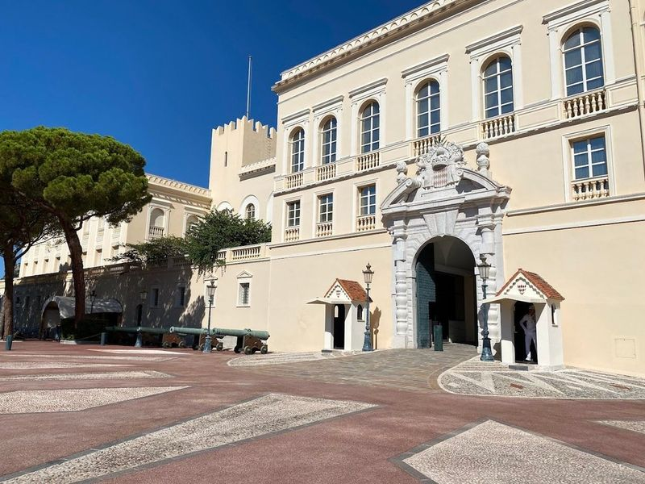
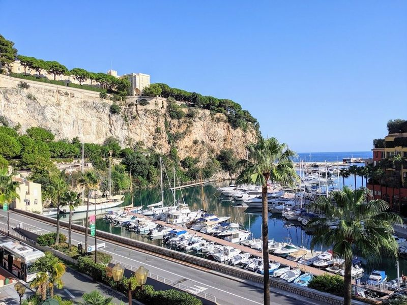
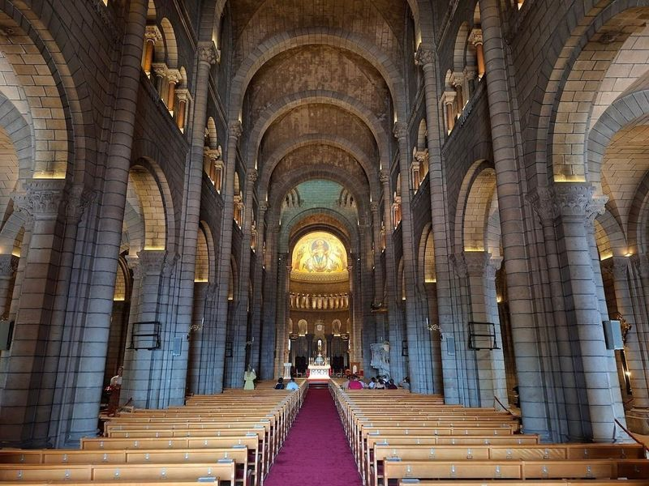
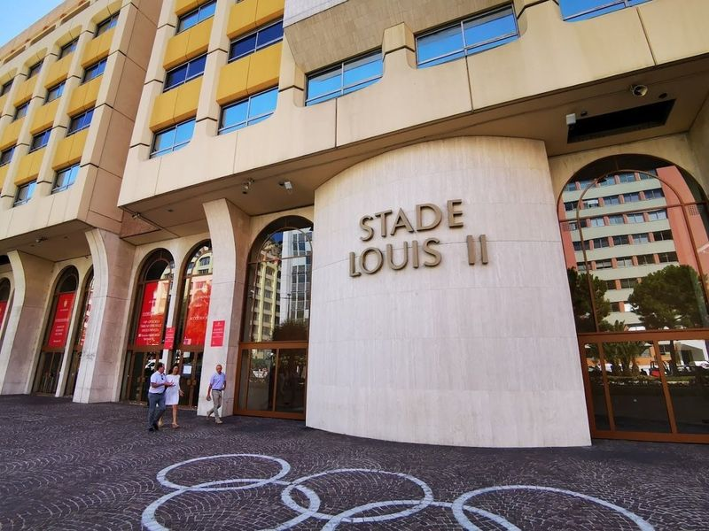
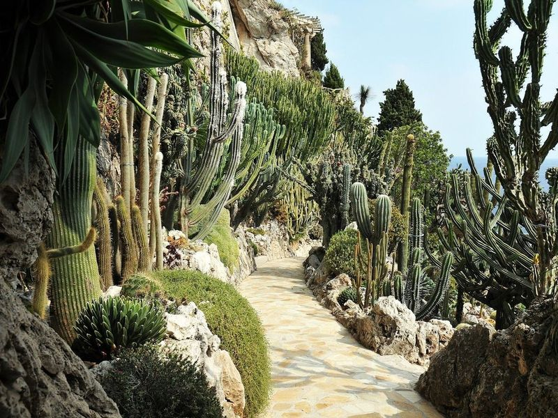
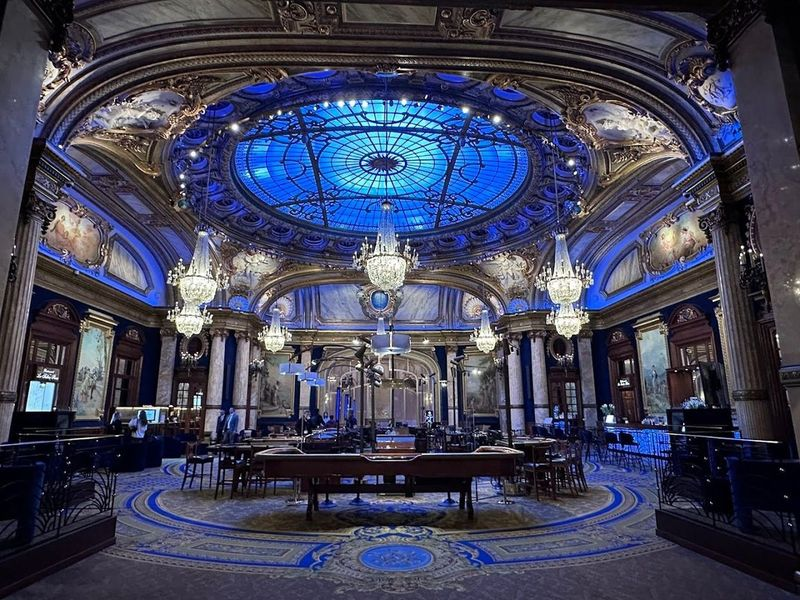
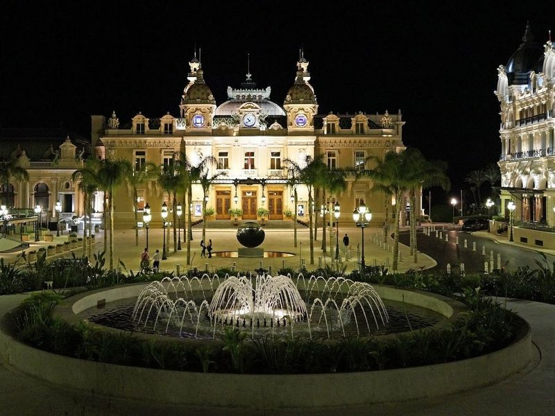
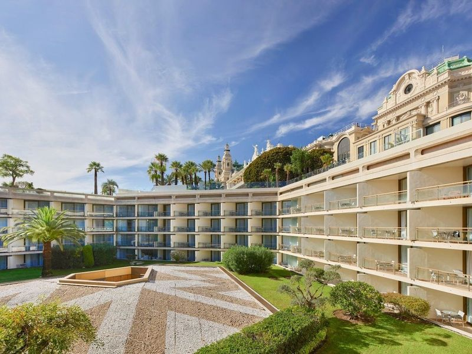
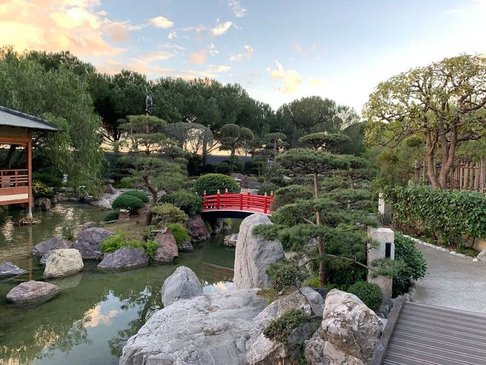
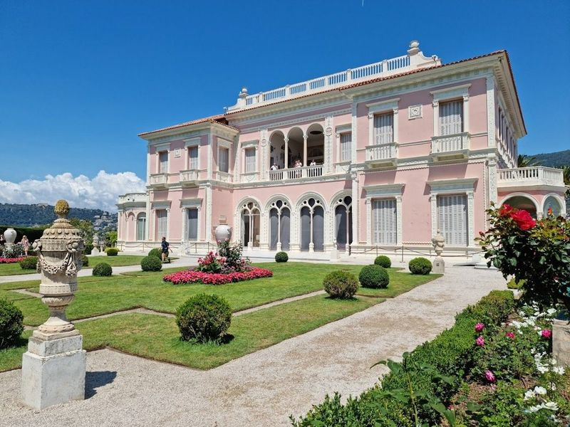

Explore Monaco
A Brief History
Monaco's fortified Rock has been ruled by the Grimaldi family since 1297, when François Grimaldi seized the stronghold disguised as a monk. The principality preserved independence through treaties with France and grew wealthy from tourism and finance after the Monte Carlo Casino opened in 1863. A constitutional monarchy since 1911, it remains among Europe's most densely built sovereign territories.
Attractions Map
Top Sights & Activities

Prince's Palace of Monaco
The Prince's Palace crowns the Rock of Monaco, a fortified residence of the Grimaldi dynasty with state apartments open seasonally. Ceremonial rooms, 17th-century frescoes, and the palace square overlook Port Hercule and the Mediterranean. The daily changing of the guard takes place before the main entrance on the square.

Port de Fontvieille
Port de Fontvieille is a redeveloped area with a 275-boat marina, surrounded by restaurants and shops. It offers beautiful views and a quieter atmosphere compared to other places in Monaco. The port is known for its sunrise views and welcoming locals. Visitors can enjoy the sight of luxurious yachts, expensive cars, and fine dining while taking a leisurely walk around the area.

Cathedral of Our Lady Immaculate
The Cathédrale de Monaco is a white Romanesque-Byzantine church consecrated in 1875 on the site of an earlier parish church. It serves as the burial place of Princes Rainier III and Grace Kelly. The nave and side chapels face the old town lanes descending toward the palace.

Stade Louis II
Louis II Stadium, the national football stadium of Monaco and home to AS Monaco, offers a capacity of over 18,000. The stadium was rebuilt in the 1980s and is known for its rich history. While some visitors find the concourse a bit tired and seating cramped, it remains a great venue with an electric atmosphere during matches. The picturesque backdrop of mountains adds to the charm, making it a favorite among fans.

Exotic Garden of Monaco
The Exotic Garden of Monaco, also known as Jardin Exotique, is a hidden gem that showcases a open-air display of cacti and succulent plants from dry zones worldwide. Perched on a rocky promontory at the north-western entrance of Monaco, it offers views over the entire principality. The garden's unique location adds to its charm, drawing visitors to admire the diverse plant species while enjoying panoramic vistas of the Rock of Monaco and the Mediterranean coastline.

Casino de Monte-Carlo
The Casino de Monte-Carlo is an elegant Beaux-Arts building that has gained fame through its appearances in film and literature. It offers upscale casino gaming, including blackjack, baccarat, roulette, and slot machines. The casino is housed in a stunningly majestic 1800s building with turrets and cupolas that give it the appearance of a palace.

Place du Casino
Casino Square is a famous plaza in Monaco, surrounded by the upscale Monte Carlo Casino and high-end restaurants. It's a popular spot for live events and people-watching, offering glimpses of the lavish lifestyle and expensive cars that frequent the area. Many sightseeing tours include a stop at Casino Square along with other historic sites like the Princes Palace and landmarks such as the Formula 1 Grand Prix track.

Fairmont Monte Carlo
The Fairmont Monte Carlo is a luxurious hotel located on the French Riviera, offering views of the Mediterranean Sea and close proximity to the Monte Carlo Casino. The hotel features 596 rooms with private terraces overlooking the sea, city, or hotel gardens. Guests can enjoy dining at Nobu and Nikki Beach Monte Carlo, as well as access to a full-service spa, fitness center, and two rooftop outdoor pools.

Princess Grace Japanese Garden
Nestled in the vibrant heart of Monte Carlo, the Princess Grace Japanese Garden is a tranquil escape that beautifully marries traditional Japanese landscaping with Mediterranean charm. Spanning around 7,000 square meters, this serene oasis was crafted by esteemed landscape architect Yasuo Beppu and opened its doors in 1994. Visitors can wander along picturesque paths that wind around a peaceful pond adorned with koi fish, cross charming bridges, and find solace in a quaint tea house.

Villa Ephrussi de Rothschild
Villa Ephrussi de Rothschild is a Belle Époque villa on the Cap Ferrat peninsula near Monaco, built for Baroness Béatrice de Rothschild from 1905. Nine themed gardens step down toward the Mediterranean while the pink stucco house displays furniture, porcelain, and paintings collected on her travels.